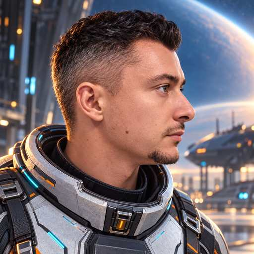
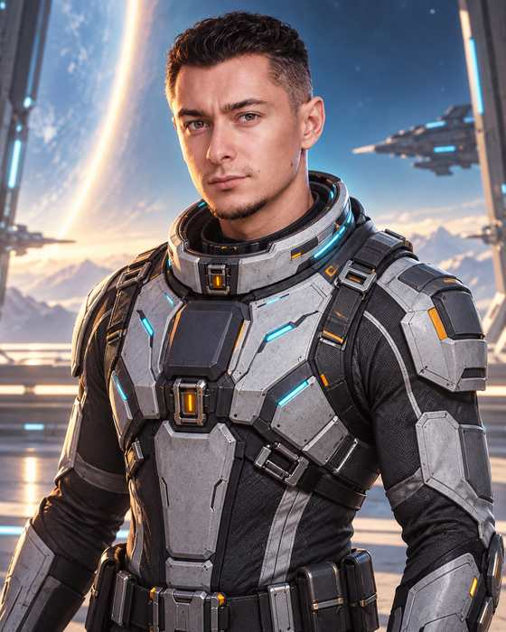

CHARACTER BIBLE / CANON v1.0
Andygen
Главный герой SOLAR 8. Высокий молодой пилот-ас: талантливый, самоуверенный, быстрый в решениях и достаточно живой, чтобы не превращаться в очередного безэмоционального «спасителя галактики».
CANON191 cmslim athleticfighter acehazel-green eyesshort dark hair
Reference views
Утверждённый внешний вид героя для дальнейших артов, диалоговых портретов и key art.
front

right profile
waist / dialogueCanonical appearance
Face & body
Height191 cm
BuildХудощавое, но атлетичное; пластичный пилот, не тяжёлый штурмовик.
FaceВытянутое овально-угловатое лицо, чёткая линия челюсти, аккуратный подбородок.
EyesСветло-карие / орехово-зелёные.
NoseПрямой, заметный в профиль; форму профиля считать важной частью likeness.
Facial hairЛёгкая аккуратная goatee: подбородок + тонкие усы.
Hair & expression
Основная причёска: короткие тёмные волосы, виски короче, сверху немного длиннее и аккуратно уложены назад/вверх — как на исходном sci-fi портрете.
Не канон: top knot, bun и braids могут существовать только как альтернативный casual-look, но не используются в основном игровом образе.
Базовая эмоция: спокойная уверенность, лёгкая ирония, без постоянной хмурости.
Personality
Формула характера
- Самоуверенный молодой ас.
- Реально талантлив, поэтому уверенность не пустая.
- Любит риск и часто действует до того, как заканчивается объяснение.
- Юмор короткий и естественный, не превращает героя в клоуна.
- В серьёзный момент быстро становится собранным.
- По ходу кампании самоуверенность превращается в ответственность за команду.
Voice vibe
Молодой уверенный мужской голос, без театрального пафоса. Сухие короткие ответы, лёгкие подколы, заметная смена тона в действительно опасных сценах.
“Plenty.” — хороший пример Andygen: коротко, самоуверенно, без лишнего героизма.
Pilot suit
Основной костюм
Slim-fit futuristic flight suit: графитовая тканевая база, светло-серые/белые лёгкие бронепанели, тонкие cyan-индикаторы и очень ограниченные amber/orange акценты.
Костюм подчёркивает рост и стройное атлетичное телосложение. Он должен выглядеть как экипировка быстрого пилота, а не космического пехотинца.
Нельзя ломать
- Не делать коренастым или массивно накачанным.
- Не менять форму носа и овала лица.
- Не убирать goatee.
- Не делать лицо слишком детским или чрезмерно «модельным».
- Не превращать костюм в bulky space-marine armor.
- Не использовать длинные волосы как основной образ.
Story arc
MercuryСамоуверенный пилот, который думает, что проблему можно просто пройти мастерством.
EarthВпервые отвечает не только за себя — защищает гражданские корабли и начинает спорить с командованием.
SaturnУзнаёт, что Vale скрывал информацию, и теряет доверие к привычной вертикали командования.
UranusПотеря ROOK показывает цену риска уже на личном уровне.
NeptuneПолучает реальное командование общей ударной группой и принимает его без бравады.